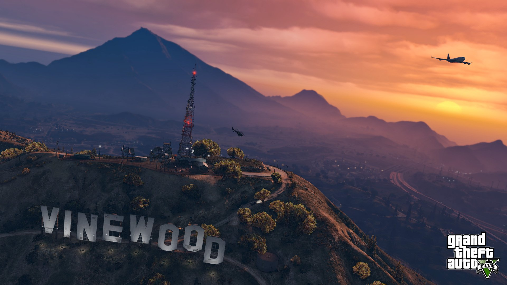

Добро пожаловать в Лос-Сантос!
Grand Theft Auto V — это культовая игра в жанре action-adventure с открытым миром, разработанная легендарной компанией Rockstar North. Действие игры происходит в вымышленном штате Сан-Андреас, который является пародией на южную Калифорнию и город Лос-Анджелес.
Сюжет GTA V разворачивается вокруг трёх главных героев — Майкла, Франклина и Тревора, чьи судьбы переплетаются в мире криминала, коррупции и погони за американской мечтой. Каждый из них имеет свою уникальную историю, мотивацию и навыки, что делает игру невероятно захватывающей.
Игровой мир GTA V огромен и разнообразен: от шумных улиц Лос-Сантоса до безлюдных пустынь Блейн-Каунти. Игроки могут исследовать город, выполнять миссии, участвовать в ограблениях, покупать недвижимость, управлять бизнесом и просто наслаждаться свободой действий в открытом мире.
С момента выхода в 2013 году GTA V стала одной из самых продаваемых игр в истории, собрав более 200 миллионов копий по всему миру. Игра получила множество наград за сценарий, озвучку, геймплей и внимание к деталям.
Исследуй мир GTA V вместе с нами!
Выбери, что тебя интересует: